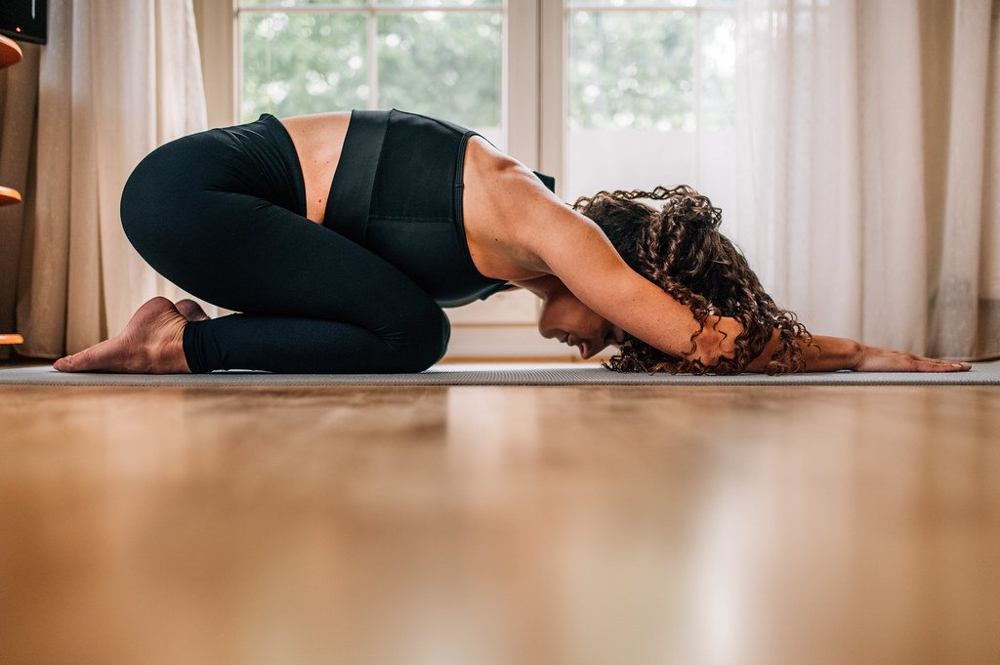

Morning stretch

Not done yet today.
Voice
Tap a voice to hear it. Your choice is remembered.
Music
- Start your music first in any app, then come back here.
- Keep the music at a moderate level. The voice and the music share the phone’s volume.
- Take the phone off silent. On an iPhone the silent switch mutes the voice while your music plays.
- The routine pauses if you lock the phone or switch to another app. Tap Resume when you are back.
Spotify works in the phone app version.
Your playlist plays during the routine, pauses when you pause and stops at the end.
- If the music does not start, tap Pause and then Resume.
- On an iPhone the music cannot get quieter while the voice speaks, so the voice is made louder. Pick a calm playlist.
Set up
Redirect address to registerHow to set up Spotify
You need Spotify Premium. You do this once.
- Go to developer.spotify.com/dashboard and log in with your Spotify account.
- Tap Create app. Name it Morning Stretch and give it any description.
- Under Redirect URIs paste
https://akuropatwa.github.io/Morning-stretch/and tap Add. - Tick Web API and Web Playback SDK, agree to the terms and tap Save.
- Copy the Client ID from the app’s page.
- Paste it in the box above and tap Save.
- Tap Connect Spotify, log in and agree, then choose a playlist.
Up to five Spotify accounts, yours included, can use your setup. Add them by name and email in the Spotify dashboard under your app’s Settings, User Management.
Turn the volume up and take the phone off silent.
How is your back today?
Routine
Your record
streak
streak
in total
Tap a day to change its back score.
In the short routine
Tap any exercise to see how to do it.
Stop rule. If a stretch sends pain, tingling or numbness further down a leg, stop that one and skip it. Easing back towards the spine is fine.
Exercise photos: Free Exercise DB (public domain). Banner photo by Ivan Radic and finish screen photo by KMo Foto (both CC BY 2.0, cropped). The voices are computer-generated.